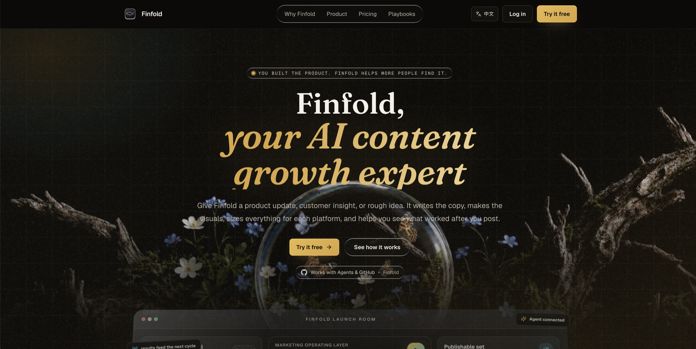
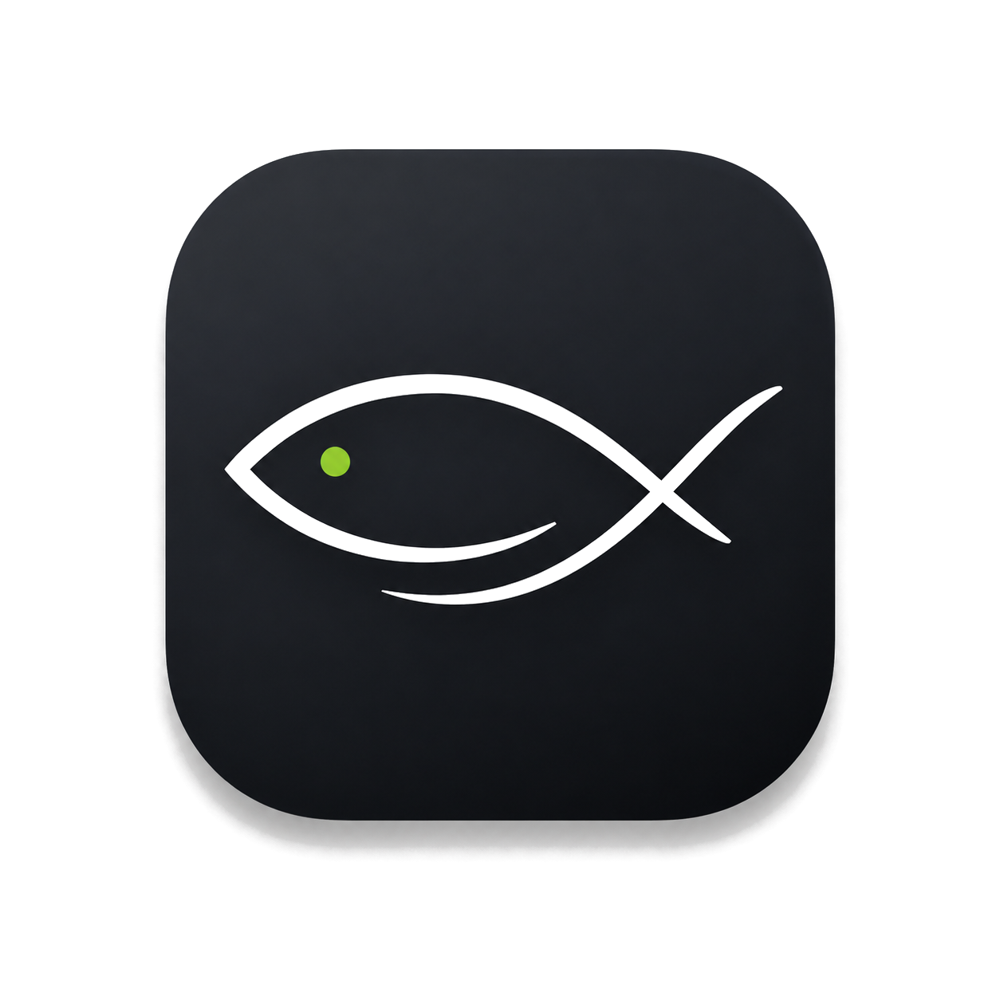
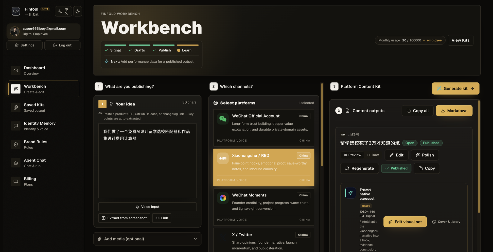
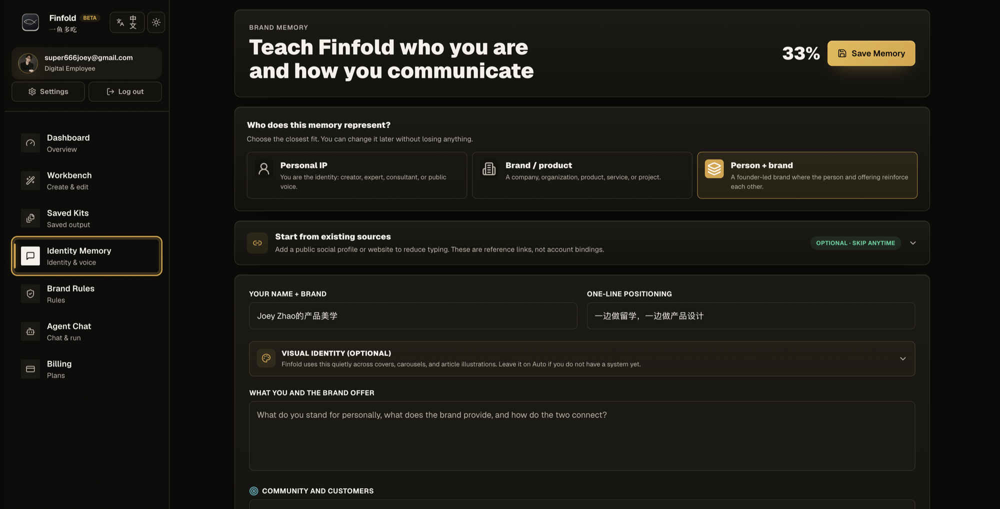
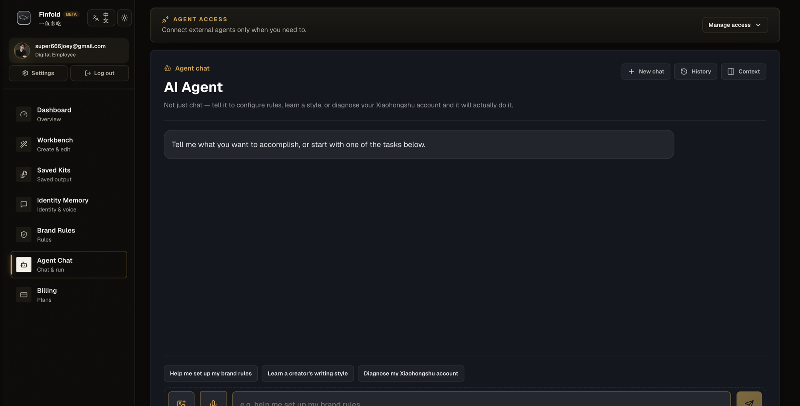

94%
跨渠道复用多数营销者会复用同一素材，但仍靠人工适配。


01 / 09 · ORIGIN · 2026
X 要锋利观点，小红书要从痛点开头，公众号要长文信任，Reddit 一眼就能闻出广告味。同一条产品更新，我曾手动改写七遍，七篇还都透着 AI 味。于是我做了 Finfold——一台内容翻译机：给它一条素材，它替你写文案、做配图、按平台调尺寸，发布后还帮你看到底哪条真的有效。
体验真实产品 →02 / WHY THIS
起因很小：我只想发一条产品更新。结果 X 要先制造冲突，小红书要把痛点说成人话，LinkedIn 要讲业务可信度，Reddit 要先贡献价值，Product Hunt 还等着一句能转化的 CTA。复制粘贴只省了三秒，后面每个平台都得重来。
我也试过把整件事丢给通用聊天机器人。它写得更快，但把七次手工改写，换成了七次 prompt 抽卡。问题没消失，只是从“我来翻译”变成了“我来猜模型这次懂没懂”。
多数营销者会复用同一素材，但仍靠人工适配。
小团队把大量时间耗在平台改写上。
团队仍会把同一段内容直接搬到不同平台。
独立开发者和精简团队通常养不起完整内容团队。
外部方向信号：GoHighLevel 2025、SHNOCO Content Repurposing 2026。用于校验问题方向，不是 Finfold 的产品 KPI。
03 / DECISION
开发最快。但用户生成完还得自己分平台、比较、编辑、保存，七个标签页一个没少。
结果稳定，却只会换格式。平台的语气、互动方式和禁忌，仍靠用户自己懂。
左栏粘贴素材，中栏选平台，右栏生成可发布的 Platform Content Kit——标题、正文、CTA、视觉、发布建议，五件套一次成型。代价是密度高，最新一轮专门修了窄屏溢出。
04 / 13 PLATFORMS
“平台原生”不是改个字数限制。每个平台奖励不同的行为：转发、收藏、讨论、信任、下单。Finfold 把这些差异写成规则，不让用户每次从头猜。
锋利观点、创始人故事、发布势能与公开迭代。
痛点开头、情感佐证、值得收藏的笔记与好奇感。
深度解释价值，承接长期信任与私域沉淀。
项目进展、温暖信任与轻量转化。
少吹概念，多讲流程、成本和团队效率。
讲清产品、受众、收益和行动入口。
05 / THE MOAT
我愿意下注的是这一层。Identity Memory 记住你是谁、为谁、怎么说话；Brand Rules 把定位、语气和禁用词写进引擎，每次生成都强制执行；发布后的真实表现，再变回下一轮生成的上下文。用户改过什么、哪条被判定有效、哪个平台带来点击，都不能只躺在报表里。
合规不是事后审核，是写进引擎里的设计。Advertising & E-commerce、Medical & Health、Legal、Finance 四个行业合规包，把广告法和平台红线翻译成规则——极限词、疗效承诺、收益保证，在生成阶段就被挡下。
06 / THE MISTAKE
第一版 Dashboard 上有“42 待发布、11 待审核、18 已排期”。看起来像个成熟 SaaS。问题也很简单：它们不是用户数据。那张图骗不了评委，更骗不了我自己。后来我把 silent mock fallback 拿掉：模型失败就明确失败，没数据就老老实实显示没数据。
“AI 产品的专业感，不靠假装从不失败。它靠失败时不撒谎、不拖垮别的工作，还给用户一条能恢复的路。”
DESIGN CHANGE · 独立输出状态 / 单卡重试 / 显式错误 / 无静默假数据
07 / LIVE PRODUCT
三栏创作台、身份记忆、品牌规则与合规库、Agent 执行、表现回流、计费与种子运营，都已经进入实现。下面是 2026.07.23 的真实产品界面——同一个账号、同一条素材。

左栏粘贴一条素材——launch note、产品链接、或一张截图；中栏选平台；右栏生成可发布的 Platform Content Kit：标题、正文、CTA、视觉、发布建议一次成型。小红书的 7 页原生轮播、X 的观点钩子，都按各平台自己的脾气来，而不是同一句话换个字数。

教会 Finfold 你是谁、为谁、怎么说话。个人 IP、品牌、或两者叠加——你的定位、语气、禁用词、范例都记在一处。它不是在生成内容，是在用你的方式生成内容：越用越像你，而不是越用越像模型。

不只是聊天。告诉它配置品牌规则、学习某个创作者的风格、诊断你的小红书账号——它会直接去做。配合 Agents & GitHub，把"它会做"变成"它已经做了"。
最新迭代继续补上平台原生度评分、行业合规库、身份记忆和 Agent 任务化执行——把“它会做”变成“它真的做了”。
边界：这些证明的是仓库实现与构建状态，不冒充真实用户量、留存、收入或统计显著增长。
08 / MY ROLE
作为 Founder / Product Designer，我负责问题定义、信息架构、产品机制、交互、设计系统、Landing Page、商业化叙事和参赛材料；同时直接跟进生成路径、权限、计费、反馈与构建验证，让设计选择能在真实代码里成立。
这个项目最值钱的部分，也不是“我会做一套 AI SaaS 界面”。是我知道什么时候该让 AI 出手、什么时候必须让人确认、什么时候该把合规写进引擎、什么时候得老老实实承认数据还没有。
09 / TRY IT
把一条真实 launch note 粘进去，看 13 个平台是不是各说各的地道话。工作台已经上线。
FINFOLD.APP
体验真实产品 →